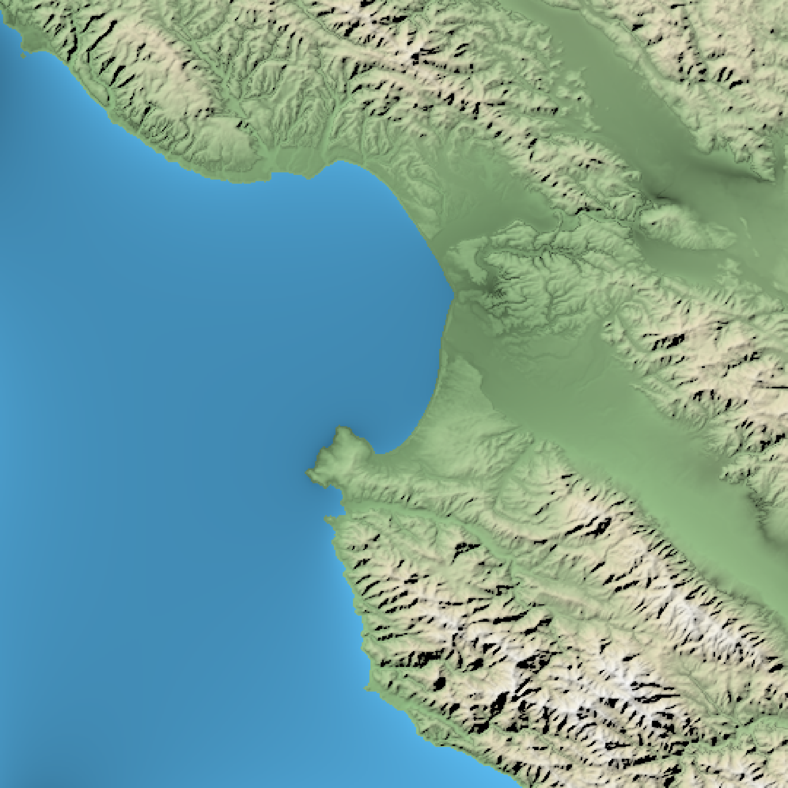
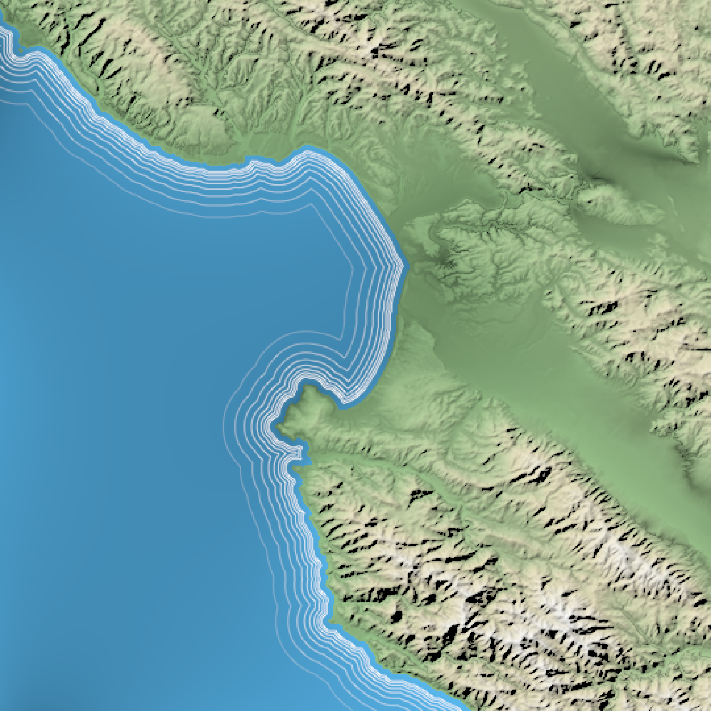
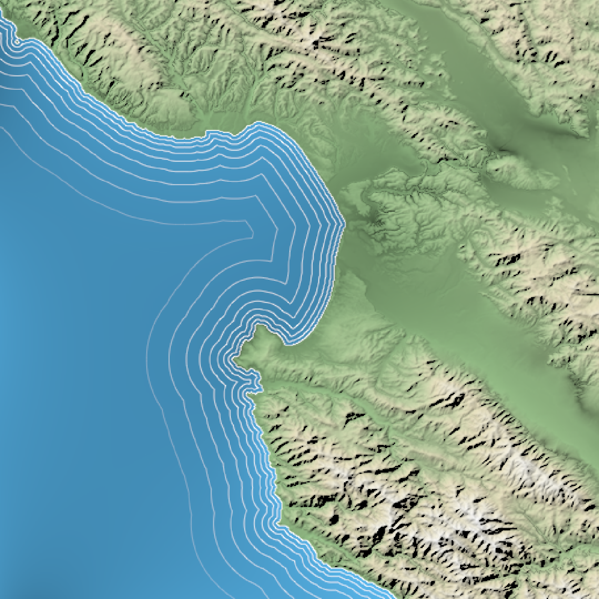
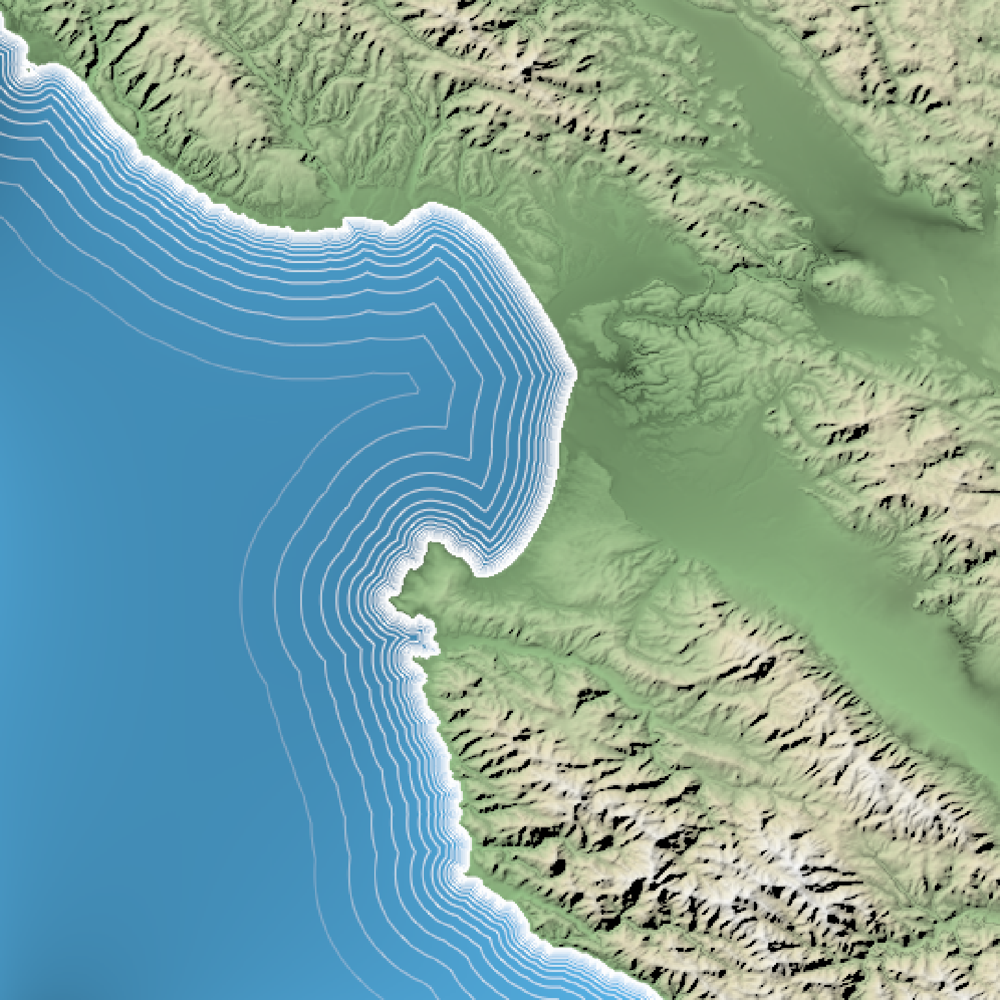
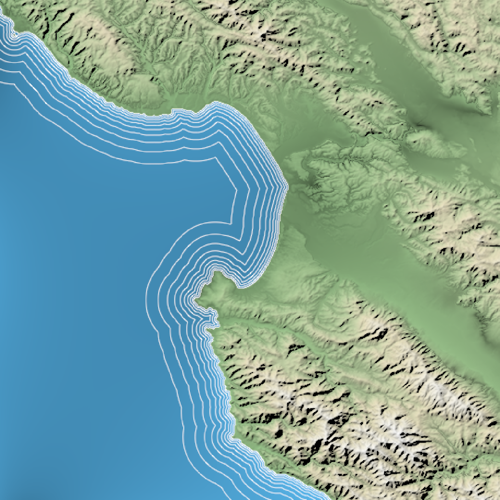
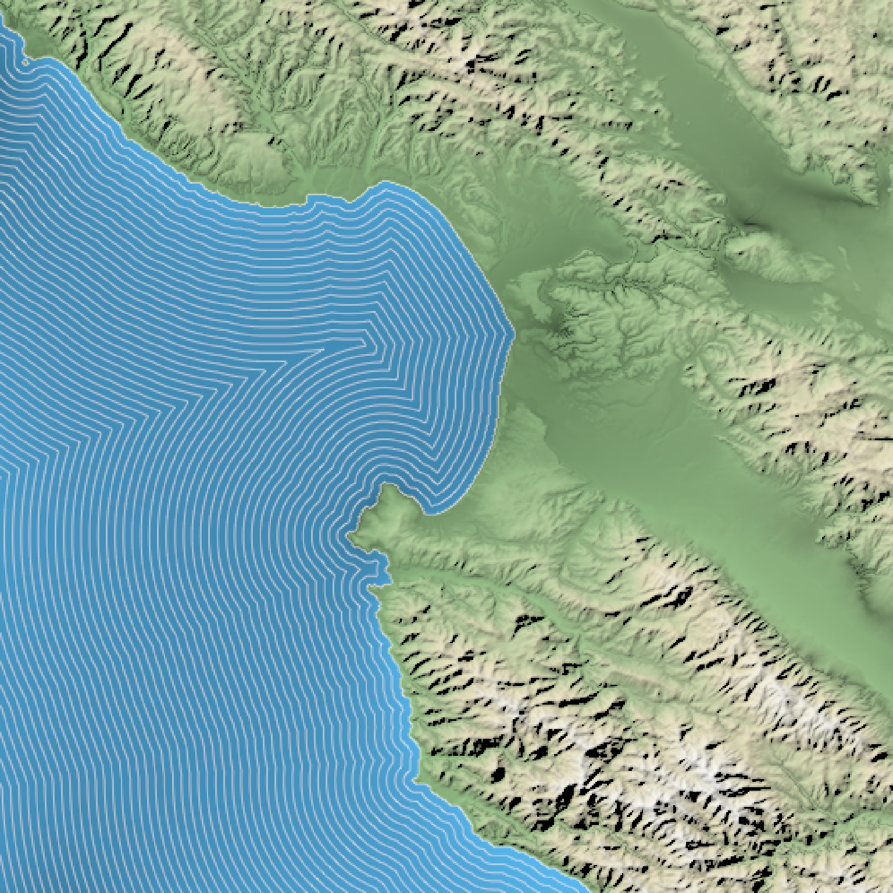
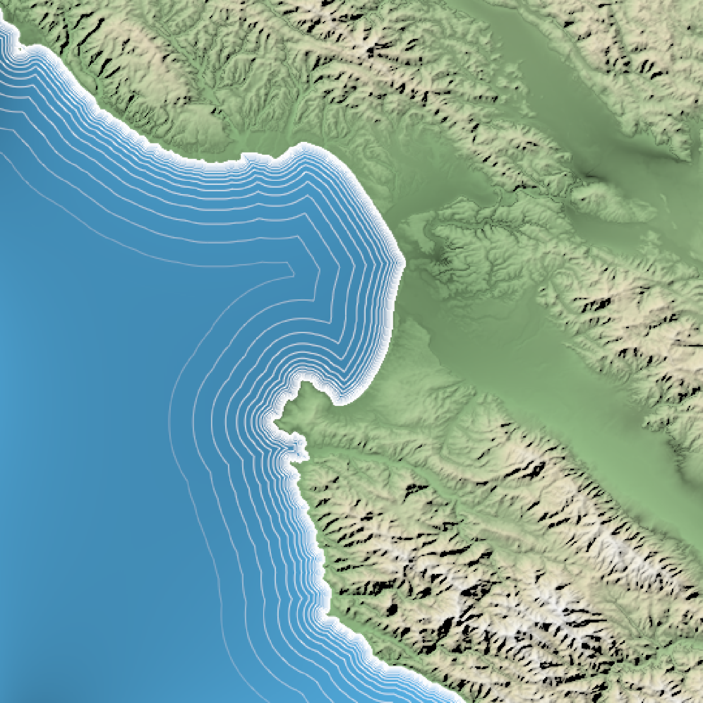
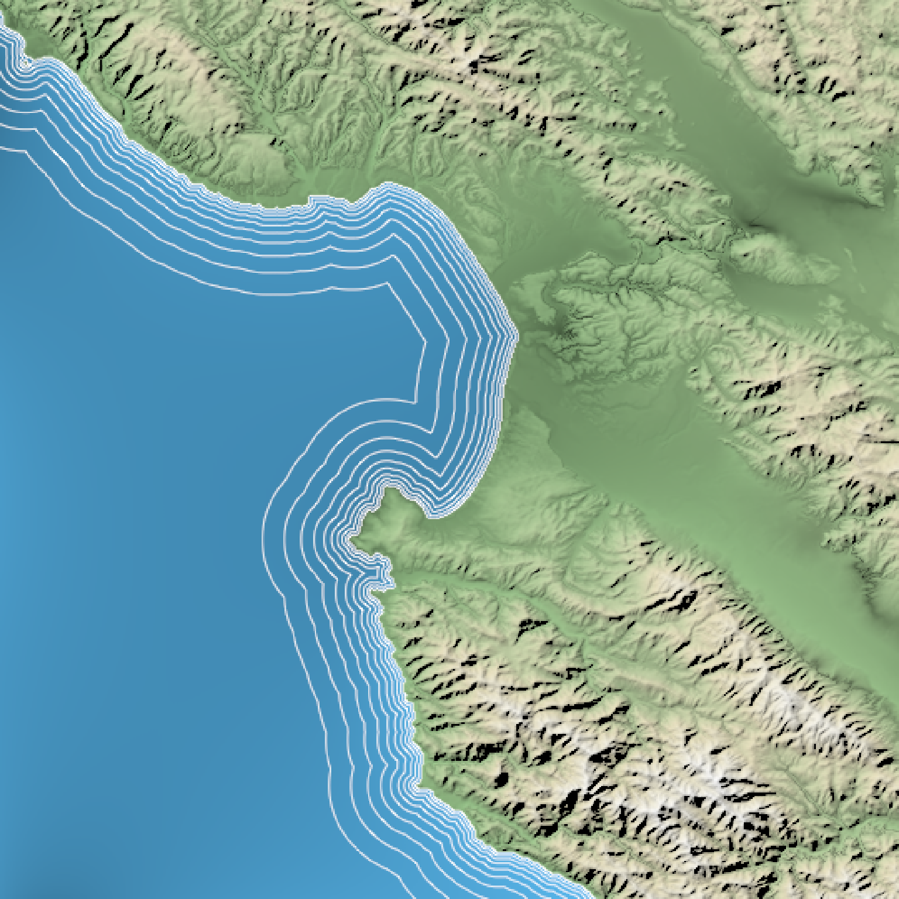
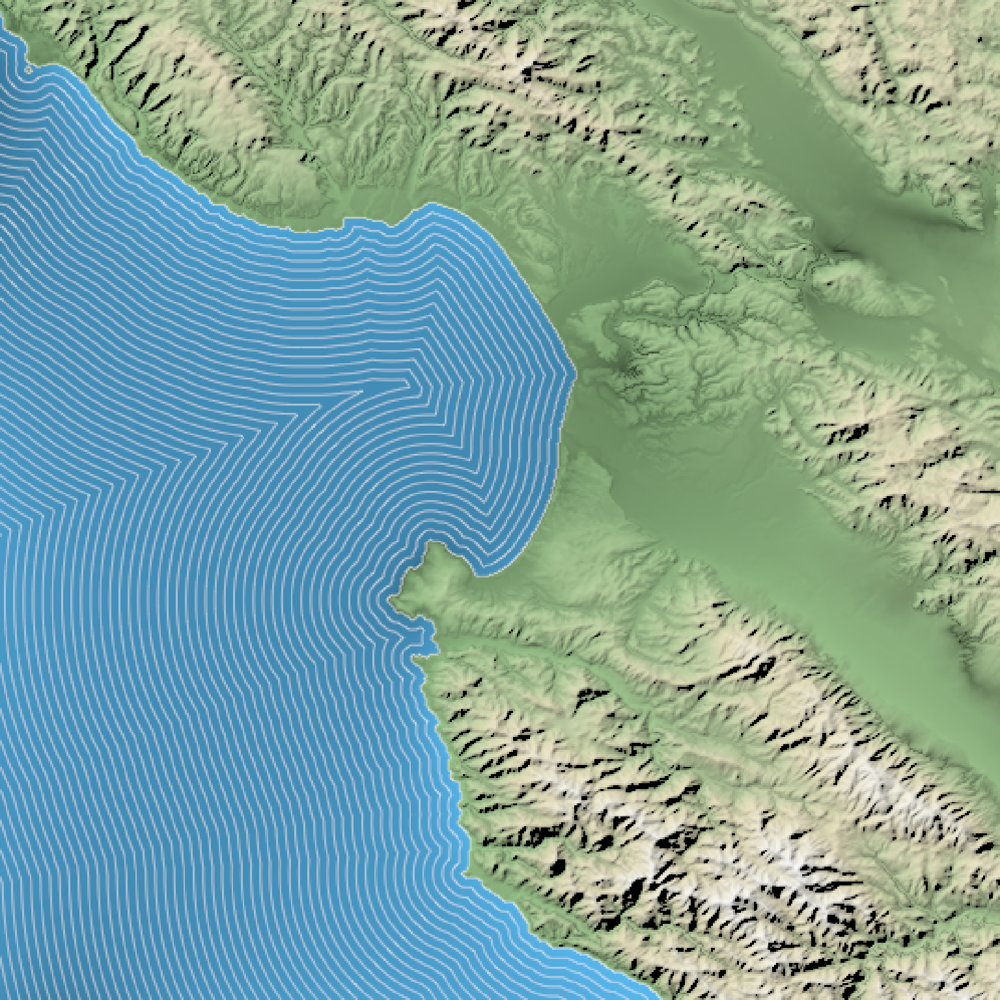

Using a height map or a boolean matrix, generates a semi-transparent waterline overlay to layer onto an existing map. This uses the method described by P. Felzenszwalb & D. Huttenlocher in "Distance Transforms of Sampled Functions" (Theory of Computing, Vol. 8, No. 19, September 2012) to calculate the distance to the coast. This distance matrix can be returned directly by setting the `return_distance_matrix` argument to `TRUE`.
generate_waterline_overlay(
heightmap,
color = "white",
linewidth = 1,
boolean = FALSE,
min = 0.001,
max = 0.2,
breaks = 9,
smooth = 0,
fade = TRUE,
alpha_dist = max,
alpha = 1,
falloff = 1.3,
evenly_spaced = FALSE,
zscale = 1,
cutoff = 0.999,
min_area = length(heightmap)/400,
max_height = NULL,
return_distance_matrix = FALSE
)Arguments
- heightmap
A two-dimensional matrix, where each entry in the matrix is the elevation at that point. If `boolean = TRUE`, this will instead be interpreted as a logical matrix indicating areas of water.
- color
Default `white`. Color of the lines.
- linewidth
Default `1`. Line width.
- boolean
Default `FALSE`. If `TRUE`, this is a boolean matrix (0 and 1) indicating contiguous areas in which the lines are generated (instead of a height matrix, from which the boolean matrix is derived using `detect_water()`)
- min
Default `0.001`. Percent distance (measured from the furthest point from shore) where the waterlines stop.
- max
Default `0.2`. Percent distance (measured from the furthest point from shore) where the waterlines begin.
- breaks
Default `9`. Number of water lines.
- smooth
Default `0`, no smoothing. Increase this to smooth water lines around corners.
- fade
Default `TRUE`. If `FALSE`, lines will not fade with distance from shore.
- alpha_dist
Default to the value specified in `max`. Percent distance (measured from the furthest point from shore) where the waterlines fade entirely, when `fade = TRUE`.
- alpha
Default `1`. Maximum transparency for waterlines. This scales the transparency for all other levels.
- falloff
Default `1.3`. Multiplicative decrease in distance between each waterline level.
- evenly_spaced
Default `FALSE`. If `TRUE`, `falloff` will be ignored and the lines will be evenly spaced.
- zscale
Default `1`. Arguments passed to `detect_water()`. Ignored if `boolean = TRUE`. The ratio between the x and y spacing (which are assumed to be equal) and the z axis. For example, if the elevation levels are in units of 1 meter and the grid values are separated by 10 meters, `zscale` would be 10.
- cutoff
Default `0.999`. Arguments passed to `detect_water()`. Ignored if `boolean = TRUE`.The lower limit of the z-component of the unit normal vector to be classified as water.
- min_area
Default `length(heightmap)/400`. Arguments passed to `detect_water()`. Ignored if `boolean = TRUE`. Minimum area (in units of the height matrix x and y spacing) to be considered a body of water.
- max_height
Default `NULL`. Arguments passed to `detect_water()`. Ignored if `boolean = TRUE`. If passed, this number will specify the maximum height a point can be considered to be water. `FALSE`, the direction will be reversed.
- return_distance_matrix
Default `FALSE`. If `TRUE`, this function will return the boolean distance matrix instead of contour lines.
Value
4-layer RGB array representing the waterline overlay.
Examples
if(rayshader:::run_documentation()) {
#Create a flat body of water for Monterey Bay
montbay = montereybay
montbay[montbay < 0] = 0
#Generate base map with no lines
basemap = montbay %>%
height_shade() %>%
add_water(detect_water(montbay), color="dodgerblue") %>%
add_shadow(texture_shade(montbay, detail=1/3, brightness = 15, contrast = 5),0) %>%
add_shadow(lamb_shade(montbay,zscale=50),0)
plot_map(basemap)
}

if(rayshader:::run_documentation()) {
#Add waterlines
basemap %>%
add_overlay(generate_waterline_overlay(montbay)) %>%
plot_map()
}
if(rayshader:::run_documentation()) {
#Change minimum line distance:
basemap %>%
add_overlay(generate_waterline_overlay(montbay, min = 0.02)) %>%
plot_map()
}

if(rayshader:::run_documentation()) {
#Change maximum line distance
basemap %>%
add_overlay(generate_waterline_overlay(montbay, max = 0.4)) %>%
plot_map()
}

if(rayshader:::run_documentation()) {
#Smooth waterlines
basemap %>%
add_overlay(generate_waterline_overlay(montbay, max = 0.4, smooth=2)) %>%
plot_map()
}
 if(rayshader:::run_documentation()) {
#Increase number of breaks
basemap %>%
add_overlay(generate_waterline_overlay(montbay, breaks = 20, max=0.4)) %>%
plot_map()
}

if(rayshader:::run_documentation()) {
#Make lines evenly spaced:
basemap %>%
add_overlay(generate_waterline_overlay(montbay, evenly_spaced = TRUE)) %>%
plot_map()
}
if(rayshader:::run_documentation()) {
#Change variable distance between each line
basemap %>%
add_overlay(generate_waterline_overlay(montbay, falloff=1.5)) %>%
plot_map()
}
if(rayshader:::run_documentation()) {
#Turn off fading
basemap %>%
add_overlay(generate_waterline_overlay(montbay, fade=FALSE)) %>%
plot_map()
}

if(rayshader:::run_documentation()) {
#Fill up the entire body of water with lines and make them all 50% transparent
basemap %>%
add_overlay(generate_waterline_overlay(montbay, fade=FALSE, max=1, alpha = 0.5, color="white",
evenly_spaced = TRUE, breaks=50)) %>%
plot_map()
}

if(rayshader:::run_documentation()) {
#Increase number of breaks
basemap %>%
add_overlay(generate_waterline_overlay(montbay, breaks = 20, max=0.4)) %>%
plot_map()
}

if(rayshader:::run_documentation()) {
#Make lines evenly spaced:
basemap %>%
add_overlay(generate_waterline_overlay(montbay, evenly_spaced = TRUE)) %>%
plot_map()
}
if(rayshader:::run_documentation()) {
#Change variable distance between each line
basemap %>%
add_overlay(generate_waterline_overlay(montbay, falloff=1.5)) %>%
plot_map()
}
if(rayshader:::run_documentation()) {
#Turn off fading
basemap %>%
add_overlay(generate_waterline_overlay(montbay, fade=FALSE)) %>%
plot_map()
}

if(rayshader:::run_documentation()) {
#Fill up the entire body of water with lines and make them all 50% transparent
basemap %>%
add_overlay(generate_waterline_overlay(montbay, fade=FALSE, max=1, alpha = 0.5, color="white",
evenly_spaced = TRUE, breaks=50)) %>%
plot_map()
}
